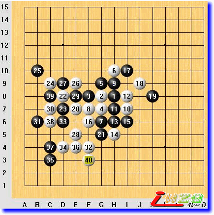
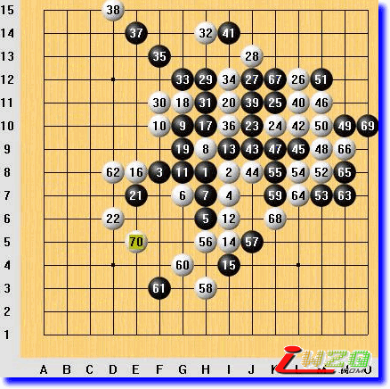

图说棋理（经验篇）
#1 图说棋理（经验篇） 作者：有志青年 发表时间：2008-9-8 13:11:19
清风[图说棋理]五子棋知识帖子目录 ShowPost.asp?ThreadID=4541
图说棋理（经验篇一）攻守转换

五子兵法云：攻守转换，慎思变化。要慎思什么变化呢？第一，要想自己残存的进攻势力的利用时机问题；第二，要想到己方转防对方必然转攻，会从哪里攻起呢？自己有没有妥善的应对手段？
本局无禁手规则，边角开局。
白4E3后，从棋形上看，是黑必胜棋形，但由于盘端（棋盘的边缘）的因素，黑不能必胜。
黑17D6活三后，白18如果在F6防守，则B9成为黑棋一示一含的必杀点（示：做出下一步能冲四活三的棋；含：做出接下来能VCF的棋）。白18在B6防守后，黑棋的进攻告一段落。
白棋在棋盘的中下方一带虎视眈眈，黑棋要转守需要考虑一点策略。实战采取的策略就是把对方的进攻引导到左上方，那样方便于把自己的已经没有进攻价值的眠三转化为防守力量加以利用。
白22正是按照黑方的计划行棋。首先消灭黑棋一个眠三力量，同时成双二，不错的招法。黑27F10，防守就像治水，要控制水流的方向，而不是要把水流憋死，那样会憋“冒”的。
白28如果下E7然后利用C7、2-20的眠二和10-6的活二向中央发展，战斗会很激烈。实战白28C9。白38E8，黑方认为白方虽有连续进攻，但仅局限在左上角，无杀，不影响大局，也就是说认为是后手。黑39J5战略性做棋。白棋也没有在左上局部进攻，与黑棋在中阳一带纠缠。棋行至白56H11，黑方考虑到过于猛烈的进攻只会带来更为顽强的抵抗，采取了不强攻只借用的策略，黑57L9，白58I12防杀同时加强自己的棋，这时摆在黑棋面前一个问题，那就是白棋上方成棋快还是黑棋右下方成棋快，经过仔细计算，决定黑59L6，这也说明一个道理：两强相遇勇者胜，不冒险也难以取得胜利。白60K9的防守似乎总跟不上黑棋的脚步，黑棋前面跑白棋后面追。
黑61做杀，白62防，黑63活三，白64只能挡下方。以下黑棋VCT。也许有人对黑63J4的必要性有疑问，的确，不下这个活三黑也能杀，而且杀法众多，这正是：控制攻防节奏，把握未来形势，势已形成，胜负即明。
#2 图说棋理（经验篇二）子力的借用 作者：有志青年 发表时间：2008-9-8 13:12:12
大家知道，单一的活三、冲四在对方的有效防守下都不能取胜，双三和冲四活三才能够取胜。就局部攻势来讲也是这样的，单一线路的进攻往往不足以取胜，两路均不足以取胜的进攻互相借用，就能大大提高取胜的几率。
本局无禁手规则，中央丘月开局
黑1至白12为序盘阶段，双方在抢占要点。
黑13开始抢三，至黑37丢掉先手。
白38一子三活二，黑棋陷入防守。
黑43g2后，白棋感觉局部作战取胜困难，采取了子力借用的方法，白44g11做杀，黑45的防守在上面局部来讲还算强，但没有考虑白棋与右面的联系。白46k9继续做杀，黑47与45的错误如出一辙，防守在局部最强，但对白棋联接意图毫无察觉。至白52L8，白棋胜势已成。
本局棋有学习价值的招法是白棋44、46子力借用的思想。欢迎朋友评论。
#3 图说棋理（经验篇三）理性下棋才最强1 作者：有志青年 发表时间：2008-9-8 13:13:11
五子棋是一种智力游戏，是一种靠计算取胜的智力游戏。拿数学计算来讲，两个数相加，用到加法就可以了，如果是100个相同的数相加，仅用加法很可能就超出我们的心算能力了，于是数学家们发明了乘法，乘法就是在加法基础上总结出来的更高级的算法，掌握这个算法，就需要掌握必要的算理，算理能弥补我们心算能力的不足。五子棋也是这样的，在棋理的引导下理性地下棋，就能大大弥补计算力的不足。
本局无禁手规则，中央妖刀开局。
黑1至白10，黑方在攻，白方在守。
黑11稍缓，所作的眠三不能直接进攻。白棋抓住这个机会立即在L11一子三活二发起对攻。
黑15放纵白棋去攻。黑棋应该把攻防区域划分清楚，既然把右边的势力让出，在这个局部就应该就应该示弱，老老实实地防守，但黑19挡二活二，防中带攻，在这个局面下就显得不太理智了。白20以下VCT取胜，次序把握得很好。
告诫初学者：下棋应该遵循棋理，遵循棋理就是理智，要做到理智就必须作必要的思考，不可凭感觉下快棋，需要思考的东西很多很多呢。
#4 图说棋理（经验篇四）理性下棋才最强2 作者：有志青年 发表时间：2008-9-8 13:18:12
在棋理的引导下理性地下五子棋，就能大大弥补计算力的不足。先手在对方手里，自己就得防守；先手在自己手里，就要牢牢把握，不轻易拱手相让，劣势不逞强，优势不过分，这就是理性地下棋。无论是进攻、防守，都应该有充分的理由去那么做，否则就是不理性的，如果不是棋理掌握得不好，那就说明思维就是混乱的。我们用一盘棋来说明。
本局中央寒星开局。黑9下H7挡二做双二，应该是更合理的，虽然白棋可以活三，但没有后续进攻手段，这时候的活三是要消耗子力的。实战黑9下H9，白10跳活三后，12挡二活二，破坏了黑棋子力的联系性。
黑17虽不是直接进攻，但它为5-9的活二和7-13-5眠三的联系开辟了道路，白18很理性地截断黑棋联系。
黑19做了什么呢？什么也没有，缓招！这时候白棋应该寻找机会进攻，经过仔细考虑，感觉E7比较好，因为这里白棋子力较为集中，黑棋较为薄弱，在此打开局面不失为明智之举。
白20E7，黑21G5防白棋活二，防守的方向不太好。白22继续进攻直到黑27防守，无声无息地淹没了黑棋5-9的活二。这时候白棋看到进攻节奏该缓一缓了，过急的进攻会增加对方防守的效率，很理智地下E5。恰恰是这一步很理智的棋，奠定了胜利的基础。
黑29防守，白30的又一波进攻随即发起，黑31防守B6，目的是等机会与29形成眠三用于防守。
这时候白棋又不急攻了，32下了E11，这也是一步很理智的棋，他考虑了对白6的借用，含招带活二，同时造就了B8的双引杀招，黑棋失去了抵抗能力。
本局棋白方一直是在遵循棋理在很理智的状态下下棋，黑19、21就差了一些，正是这一点点差距，导致黑棋的失败。
告诫初学者：下棋应该遵循棋理，遵循棋理就是理智，要做到理智就必须作必要的思考，不可凭感觉下快棋，需要思考的东西很多很多呢。
变化参考图
变化参考图2

变化参考图3
变化参考图4
变化参考图5
变化参考图6，白34胜了
#5 图说棋理（经验篇五）视先手为生命 作者：有志青年 发表时间：2008-9-8 13:19:06
日本第一代五子棋名人高山互乐在《五子棋真理》的序文中写道：“围棋如同战争，即使在一部分失着，还可以在其他部分收取，并可以控制获胜的大势。五子棋则如同白刃相接，一刀招架失误即决出胜负。。。”既然是白刃相接，那肯定先下手为强后下手遭殃了，所以五子棋的先手显得尤为重要。
本局浦月开局，黑必胜开局。白4位强防之一。黑5，比较强。白6如果跟到上面去防守，凶多吉少，所以下了G8，装出剑拔弩张的样子，来吓唬吓唬对方。黑7H7，不是较强着法。白棋接下来的行棋只是试验对方应手，白8G5活三，黑9G6挡中间，白10H6活三，黑11F4防守下面，正确。白12I5活三，黑13J4防守。
这时候白棋看到这里想取胜是不现实的，但是也不敢贸然去上面防守，白14先F5活三搞搞破坏，黑15H5挡中间，白16F7继续纠缠。这几步白棋或者活三，或者制造比较具有活力的活二，使得黑棋不敢去做棋。黑19F8单防，白棋继续实行纠缠战略，因为棋盘空间越小，和棋的可能性就越大，能和棋也是白方求之不得的。到黑25D5防守，这一局部告一段落。
白棋早晚要去上面防守的，这是没办法的事，但是怎么个防守次序，比较费脑筋。白26K9跳冲四后28G10防守，黑29走D9，难道白棋还能在这里死灰复燃？这手棋可以考虑一下J11。黑29缓了，白方窃喜，30占领J11，送了一口气。黑棋还在跟着守，白32I8，不求有功但求无过，下得也消极了一些。
这时候黑33顺势下I4，防白棋的眠三是次要的，因为这个眠三没什么危险，进攻还是主要的。
白棋34想下J3，但是考虑到黑棋G4后F2，就和左面联系上了，还是下了H4防守。黑35J6攻防兼备，白36J7防中带杀，黑37K6越战越勇，白38L7捉襟见肘，黑39L6来势汹汹，白40M6居然柳暗花明！！
黑棋自然不甘心，要再攻攻看对方有没有看到这路防守，黑41K7冲四后43K5双活三。白棋如履薄冰顽强防守到48I3防住黑方的VCF。
黑方继续在这个角落里苦心经营。49M7冲四防住对方一个活二后转向J2进攻，之后连续冲四再挡L3。白58H3意义并不大，只不过想废品充分利用罢了。接着防守行棋至62N2。
黑63N5，这手棋效率极低！白白送给我一个先手。下五子棋，应当视先手为生命！我可爱的对手啊，你怎么就这么不珍惜呢？
白64K12抓住这宝贵的机会扩大地盘，之后一气呵成，品尝到了胜利的美酒！
这盘棋想告诉大家：人最宝贵的是生命，五子棋最宝贵的就是先手！
#6 图说棋理（经验篇六）欲擒故纵 作者：有志青年 发表时间：2008-9-8 13:19:48
“欲擒故纵”乃《三十六计》之“攻战计”之一，为了进一步的控制，先故意放松一步。在五子棋中，就是给对方机会和空间让对方去进攻，自己顺势更加强对对方的控制。只要目测不到对方有杀棋，就可以让对方在某一局部取得优势，这样对方会有进攻的欲望，攻完后看不到杀，在形势上以及心理上都会产生压力，更重要的是自己在另一局部加强攻势，。但这里面有个“度”的问题，要锻炼提高自己“目测”的能力，把握不好的话会弄巧成拙，让对方一鼓作气成杀！
本局无禁规则，中央明星开局，在有禁下法中是黑优开局，五手下一打点的话是黑必胜开局。
白4G8，小马步防守。黑5H6做双二。白6G7反做双二同时阻断黑棋斜向跳二并对黑1有所控制。
黑7F6再做双二，并没有直接阻拦白棋的活二，采用的是牵制战术，这时候白棋如果胡乱活三会受到黑方的严厉回应。
白棋同黑棋进行互反三到黑15G9防，棋形变成了疏星开局的一个棋形，疏星开局黑棋没有明星开局那么强，所以这个小战役可以说是白棋的胜利。
白棋虽然取得一个小胜利，但是全盘局面并不占优，白16E7防守；黑17做双二进攻；白18先手冲四在J7，这是这个局部棋形上常用的防守办法，黑棋挡冲，白20H3防守。白20如果E6，也许更积极，但不是我的风格。
黑21I5再做双二。不断进攻的意识不错！白22防守在了L8,指导思想是就是“欲擒故纵”，让对方向右下角进攻。
黑23H5活三，在白方的计划之内，没什么可怕，但是既然想在这里给对方优势，就不要在这里跟对方争，老老实实地守就是了。
黑25K5同时成眠三、活二，白26K6，作用是挡活二、废掉黑5、11的眠二、牵制黑23、21、25的眠三（活二牵制眠三？我在说笑话？呵呵，多少有点牵制吧）。
黑27J4又是一个眠三带活二，白28L5活三先挡黑棋的眠三，黑29I8挡三。我当时还以为对方会挡在M4呢，因为那样才是对手一味进攻的风格呢，其实对方真挡在M4，我也没有目测到上面白棋的杀，但是对方却没有“欲擒故纵”，还是求稳了。
白30L6明是进攻暗是防守，黑31L4用强，白32、34行使两步先手的权利后36K3防守。
黑7M3活三进攻，这个角上黑棋的目的很明显不是要杀，是感觉形势不好想通过纠缠削弱一点对方力量的目的。
白38J6挡在里面同时成活二。黑棋连续冲四达到了削弱对方的目的。接下来黑43I3成双眠三同时防白棋的双三。
白棋这时候不想纠缠了，也没细算黑棋的双眠三有没有威胁，就想哪怕吃点亏也要取得先手向上发展。反正白方在这里走一手委屈一点的棋（指的是白46I4）黑棋也就没有威胁了。在这思路的驱使下，抢到了白48J10。也许初学者要问了：为什么48走那里呢？这个说起来话就多了，因为这是一个战略性下法，有一种感觉的东西在里面，这个我现在说不清楚，抱歉！
黑49、51、53连续无谓进攻后，下黑55E4落了个后手！！我想，这是在我这种水平能看到的本局中最大的失策吧！
白56H11，有种“前途无限光明”的感觉，后面的几手棋，不想再赘述。
本局棋想说明两点：1、欲擒故纵要把握好“度”，风险是要冒的，无限风光在险峰嘛，但是小心从险峰上摔下来！2、不是为杀棋只是为交换的行棋，一定要算清最后的先手花落谁家！
#7 图说棋理（经验篇七）盲目进攻之害 作者：有志青年 发表时间：2008-9-8 13:21:56
不讲求做棋，盲目进攻，犯五子棋之大忌，有棋局为例。
本局无禁手规则，中央大妖刀开局。
因黑3与黑1白2距离过远，在天元周围是白方优势，但黑3并不是对主战场没有影响，从黑9可以看出，如果没有黑3的作用，白棋可以先手进攻的。
从黑13开始直到黑25，黑方全部是追手（活三或冲四的招法），一直猛攻到筋疲力竭，再观察局面，白棋可以做棋的地方太多了，黑27防白棋的两个活二同时自己成一个眠三和一个活二，但是已经太晚了，白28一子多杀，黑败！
棋理：进攻消耗棋力，防守积蓄棋力，所以只有计算到最后的杀棋才能发动总攻，否则只能以攻为守、以攻取势，而不能调用全部棋力发起总攻。
盲目进攻的又一例子，黑方自己攻死了自己！
黑棋自己攻死自己的又一例。黑从35开始自己铺设了一条走向失败的道路！
#8 图说棋理（经验篇八）提高子力效率的技巧 作者：有志青年 发表时间：2008-9-8 13:22:50
围棋中有个棋理，就是使对方的棋下得滞重，相对提高己方子力效率，这在五子棋中也是适用的，有棋局为例。
无禁手规则中央斜月开局，黑必胜开局。
8、9、10、11四手棋必然。白12J8后黑13I11较好。实战黑13K9。白14示手，黑15防。
这时候注意看，如果白棋直接防守I11黑棋的双二点，黑棋是不会下I8来防守白棋的活二的，要防也会防在外面，对不对？白棋先手活三，就能逼迫黑棋在里面下一手棋，这样就提高了白18I11的效率。
棋行至黑35，黑方G5为双示点，白36先冲四，增加黑棋37后，就提高了白38的防守效率。
黑43落后手。白44开始主动进攻。
黑45后，白46如果在H12防守，黑棋是不会在H9防守白棋的眠三的，要防也会防在K12,这时候白棋46先冲四，这样就提高了白48防守H12的效率。
黑51也许受不了白棋的高压态势，出现严重失误，白胜。
即使黑棋不出现严重失误，如果黑白攻防效率一直这样相差下去，最终白取胜也就是必然的结果了。
棋理：提高子力效率的技巧之一就是迫使对方下得滞重。
#9 图说棋理（经验篇九）学会放弃 作者：有志青年 发表时间：2008-9-8 13:23:31

俗话说：“忍一时风平浪静，退一步海阔天空”。在五子棋中，势成则顺势而杀，势不成莫强求，学会放弃才能把握主动。
本局棋中，白48之后，看似白棋在右上角优势很大，但并没有杀。白50试一下应手，54破一下对方眠三，正当对方紧张之时却突然放弃这里，转走他处。
黑57防白棋活二的同时还在惦记着右下角局部。白58继续加强左下角，明显已经放弃右边了，黑59却在这里经营起来，完全没有估计即将到来的危险，白方知道对方忽略了自己已经废弃的眠三，放纵黑方在那里做，白60活三后62做VCT杀，这时候黑棋攻不成又守不住了，一切都晚了。
沉痛的教训！
#10 图说棋理（经验篇十）保持进攻级别高于对方 作者：有志青年 发表时间：2008-9-8 13:26:53
一般进攻和发起总攻的区别：进攻，要注意保持先手；总攻，最重要的保持进攻级别高于对方。
本局棋行至白24，黑棋看似有很多进攻点，如何选择呢？
首先我们来考虑按ABH的次序来发起总攻，白棋占领H13后，形成含招，其进攻级别会提高；我们再来考虑按BH的次序来发起总攻，白棋占领F9后，形成示招，其进攻级别也会提高；先用E点来进攻，白棋D点反三后黑棋也许还能胜，但需要一些复杂的计算。
最好的选择是F点，我们来看看为什么。首先，我们假设白棋E9反三，黑棋可以在H6点做VCF,防守的同时使自己的进攻级别更高；如果白棋防在E7，仅仅是个活二，黑27G10示招要高于活二，白棋再防守的时候，黑29D7活三，当白棋占领F9把进攻级别提高到示招的时候，黑棋已经可以在下面实施VCF了。这样，黑棋的进攻级别总是领先于白方一级，最终取得胜利。
对进攻级别的理解能够引导我们行棋，对进攻和防守都有指导意义。
按ABH的次序进攻，白30使得黑棋的进攻不能连续。
按BH的次序进攻，白28F9后，黑棋的进攻不能连续。
E点进攻变化图1，黑棋进攻不能继续。
E点进攻变化图2，黑棋进攻不能继续
E点进攻，符合“保持进攻级别高于对方”的理论。图1
E点进攻，符合“保持进攻级别高于对方”的理论。图2